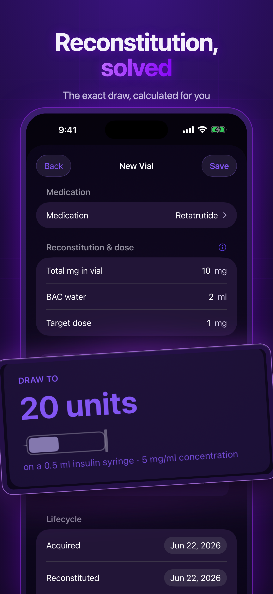
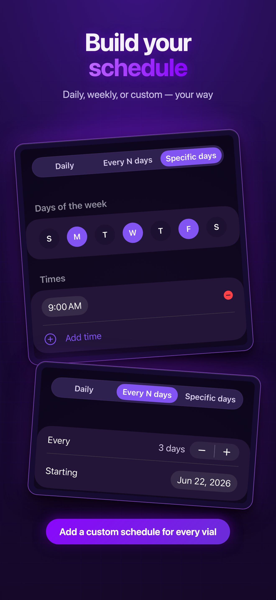
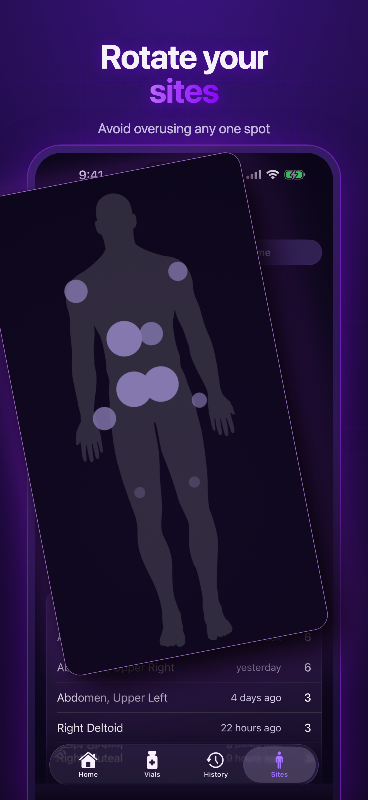
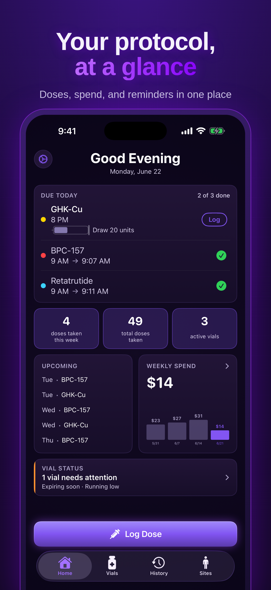
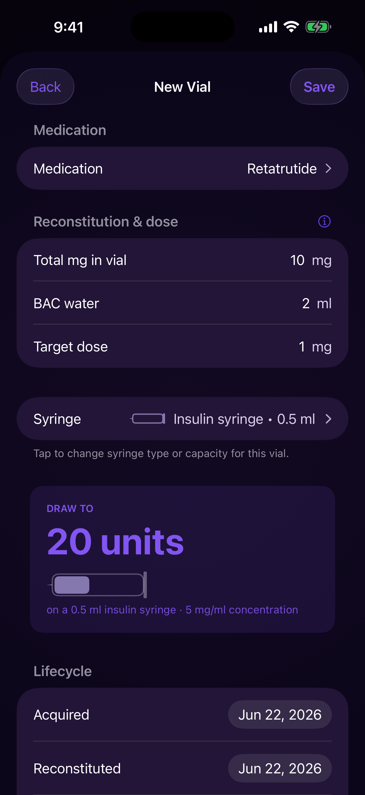
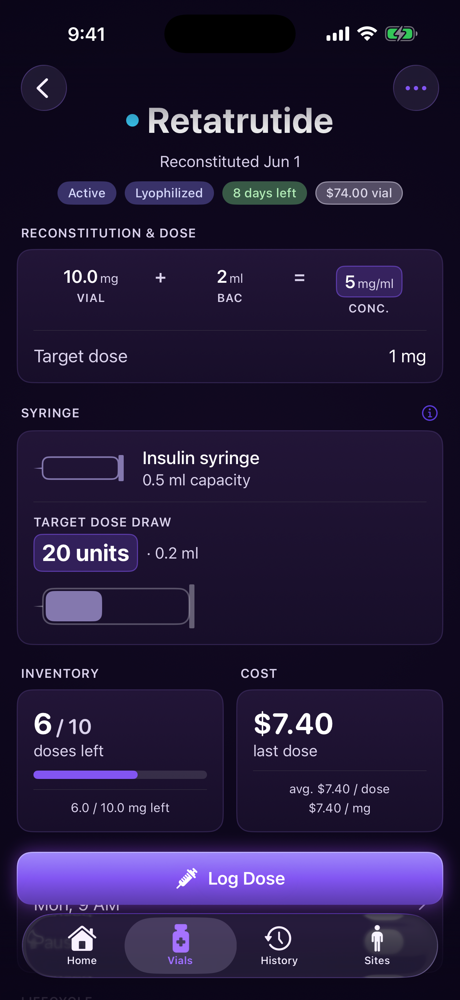
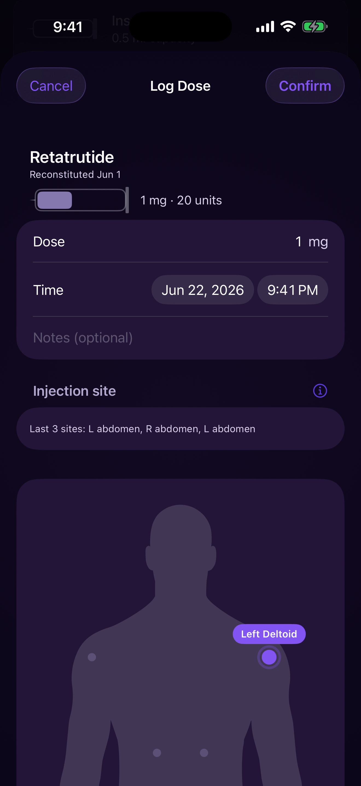
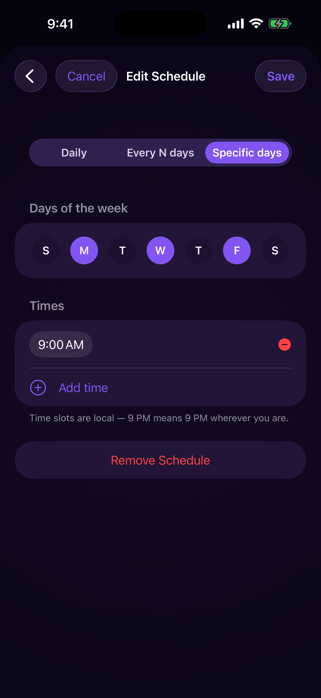
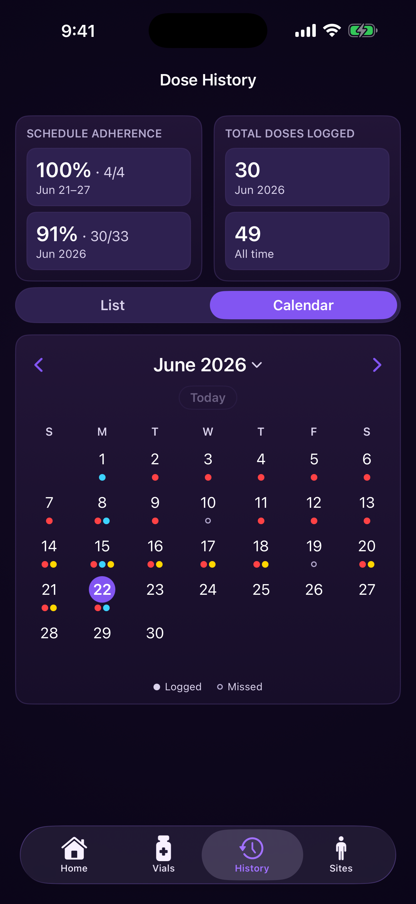
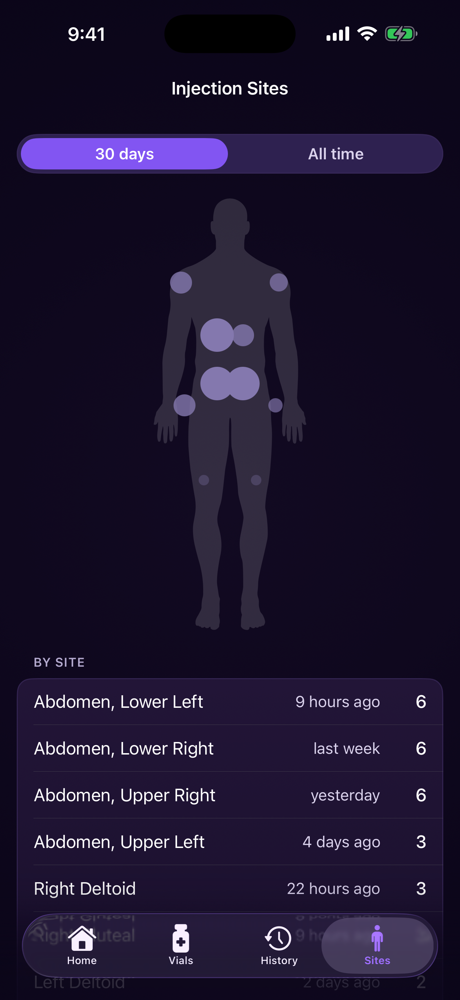

Free
$0
No account, no credit card
- Reconstitution calculator
- Dose logging with body map
- Schedule reminders & precise dose timing
- Up to 2 active vials
- Up to 2 custom medications
- History list view
- CSV export — always free
Vialed is a precise, private tracker for peptides, GLP-1s, TRT, HRT, and any injectable protocol. Reconstitution math, dose history, and vial life — all in one place, all on your device.

A tracker, not a prescriber. Vialed records what you did with precision. It doesn’t give medical advice or tell you what to take next — that’s between you and your clinician.
Tips, guides & early features in your inbox.
You’re in. Tips, guides and early looks at new features will go to your email.



Enter your vial and BAC water — Vialed does the concentration and draw-unit math for you. No more napkin calculations or second-guessing the syringe.

Every vial knows where it is in its life: reconstitution date, concentration, doses remaining, and an expiry countdown. Nothing expires on you by surprise.

Log a dose with the right amount, site, and time in a couple of taps. Change a dose going forward without rewriting your history.

Vialed tracks your schedule to the minute and tells you exactly when the next dose is due — down to “9:00 AM → 9:06 AM,” not a vague reminder.

Every logged, skipped, and scheduled dose, laid out so patterns are obvious. Color-coded by compound, so a stack reads as cleanly as a single protocol.

Track injection sites over time so you rotate properly and avoid overusing one spot. A body-map heatmap of your last 30 days and all-time history — your body map, your history.

Built for any injectable. Peptides, GLP-1s, TRT, HRT, and more. If it comes in a vial and a syringe, Vialed tracks it.
Vialed has no account, no login, and no server holding your records. Your vials, doses, schedules, and notes live on your device — and are backed up through your own private iCloud if you choose to turn it on. We can’t see your data. We don’t want to. There’s nothing to sell, share, or leak.
Read the Privacy Policy →Tips, guides & early features in your inbox.
You’re in. Tips, guides and early looks at new features will go to your email.
No. Vialed is a tracking tool. It does not diagnose, prescribe, or recommend dosages. All dosing decisions should be made with a qualified healthcare professional.
Yes. Your data is stored on your device and is backed up through your own private iCloud if you choose to turn it on. We do not collect, sell, or analyze your usage data.
No. Vialed works without an account. iCloud backup, if you enable it, uses your existing Apple ID.
Any peptide or injectable medication — including TRT, HRT, GLP-1s, growth hormone peptides, and research compounds. You define the medication, the concentration, and the dose — Vialed handles the math and tracking.
Vialed is currently iPhone-only, designed natively for iOS. iPad and other platforms are on the roadmap.
Vialed Premium is billed monthly ($9.99) or annually ($79.99). A 7-day free trial is included. Cancel anytime in your Apple ID subscription settings. Subscription renews automatically unless cancelled at least 24 hours before the renewal date.
Yes. Export your full dose history as a CSV at any time — free, on every tier.